ISO 4001/500f/8
Eje central
Seguridad y prevención
- Preparación previa a la jornada
- Evaluación de riesgos en terreno
- Desplazamiento seguro entre multitudes
- Protección personal y del equipo
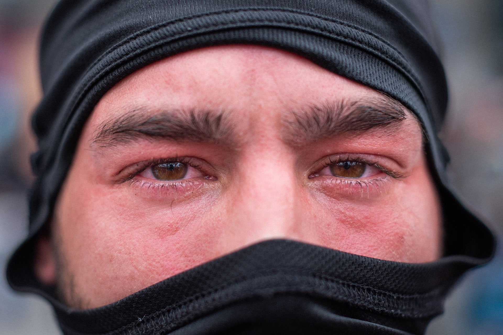
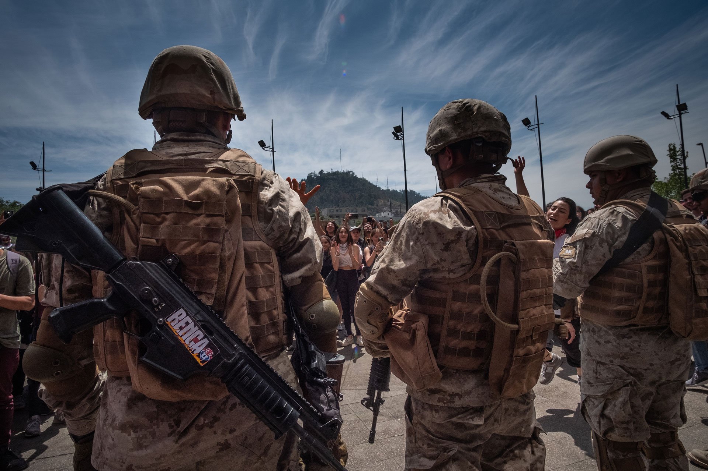
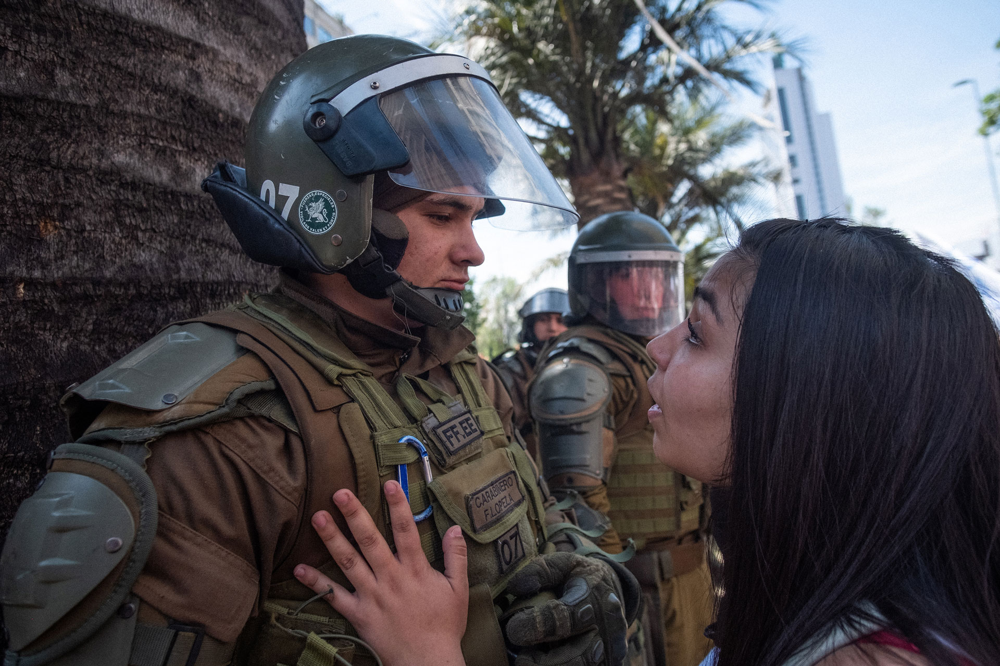
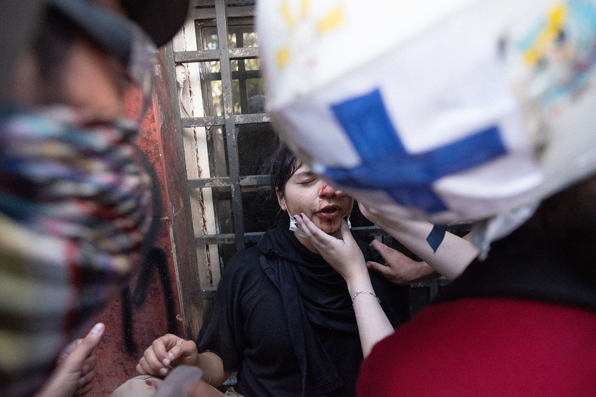
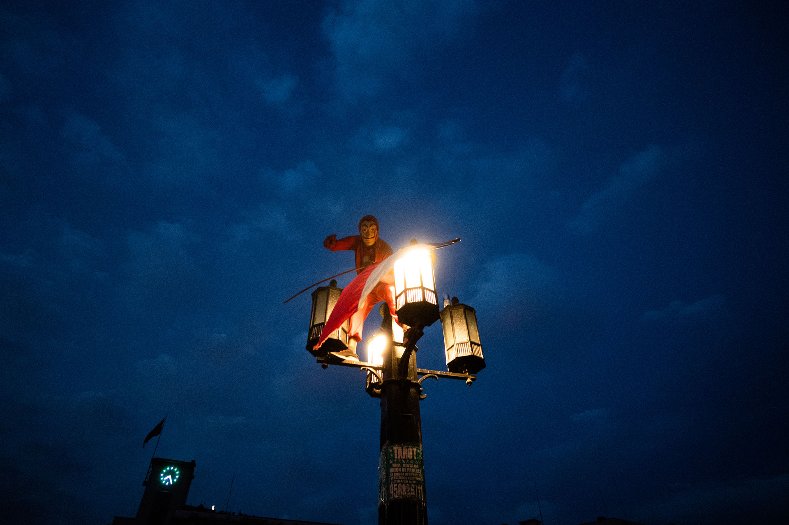
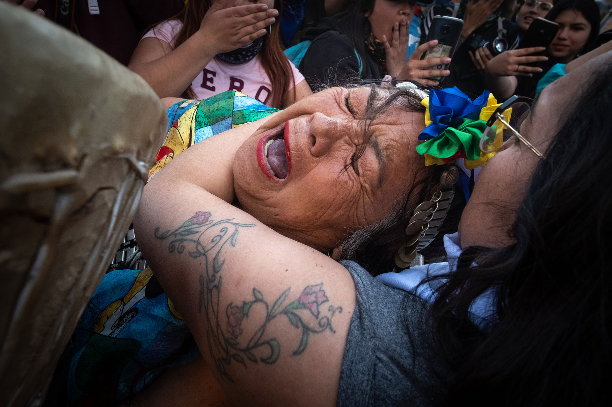
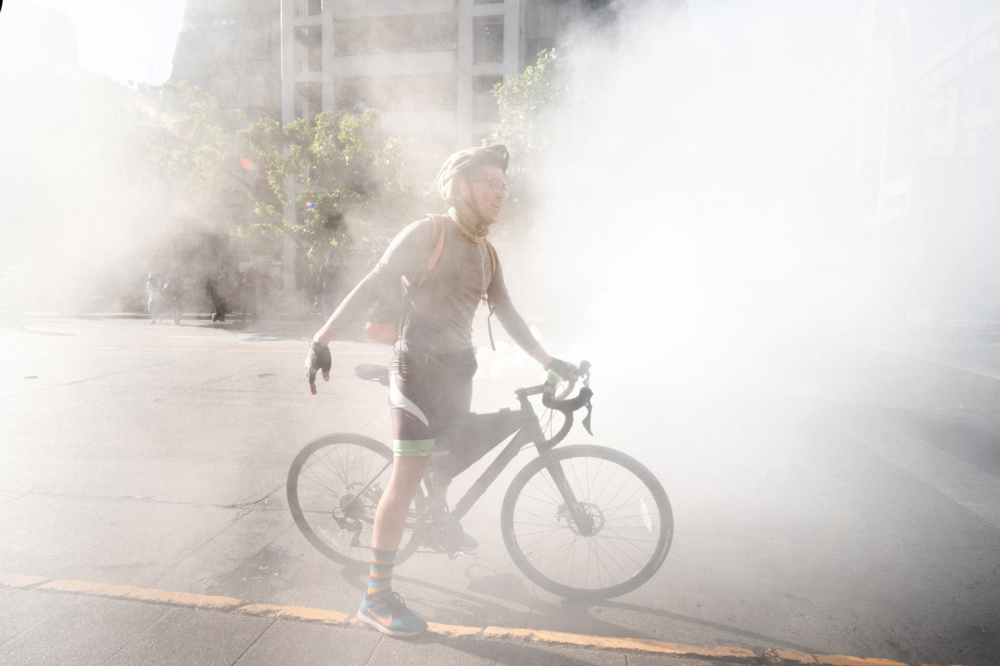
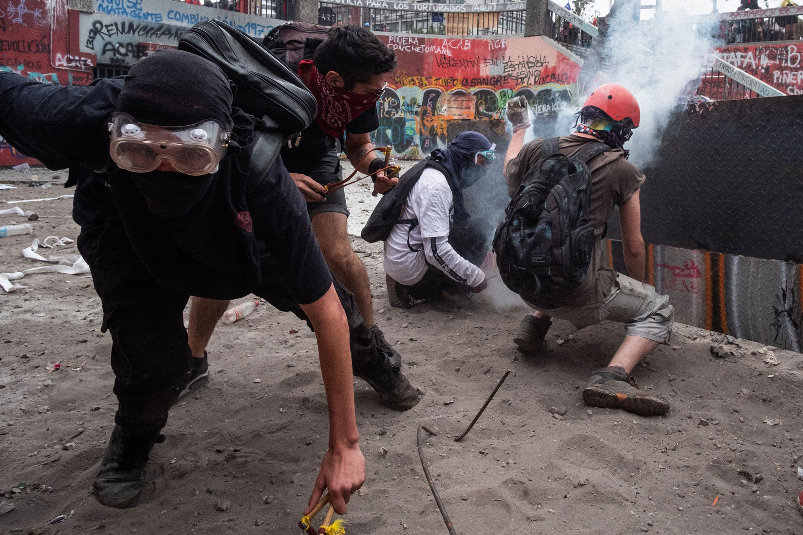
Para personas que están empezando en fotografía y quieren aprender a documentar marchas, manifestaciones y movilizaciones sociales. Vemos técnica, relato y ética, con énfasis en la seguridad y la prevención al trabajar entre multitudes y en situaciones impredecibles.
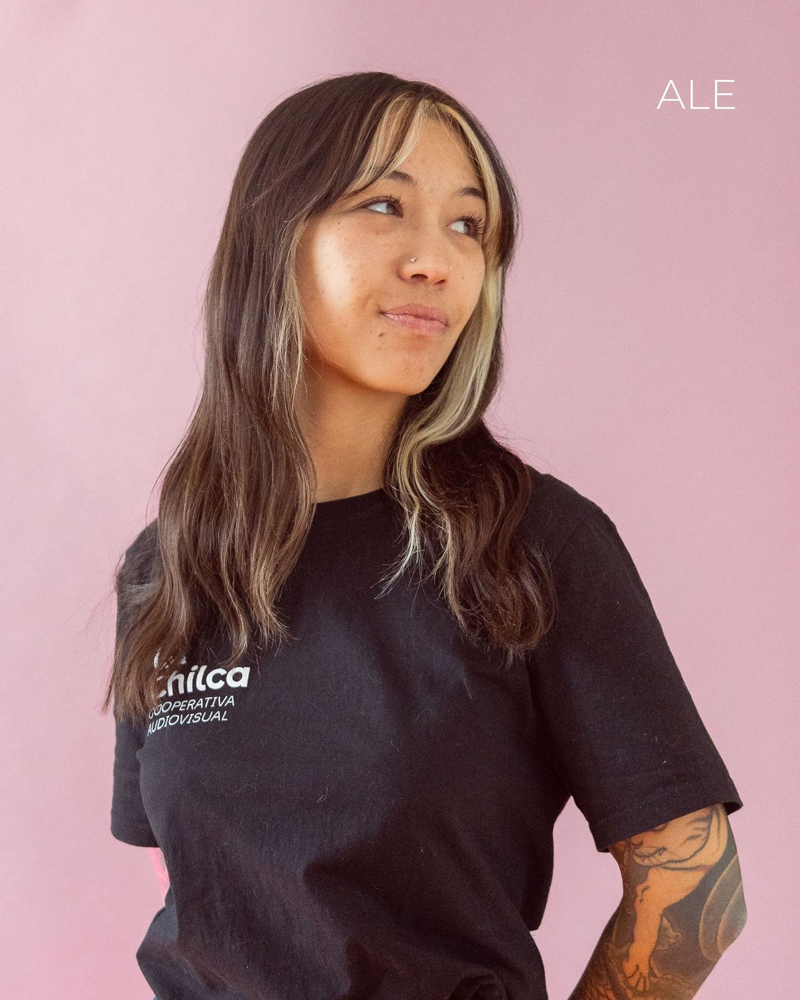
▸ 06AFotografía documental y de autor
Alexandra Pinto es fotógrafa profesional chilena, formada en la Escuela de Fotografía ARCOS. Su trabajo se ha desarrollado entre la fotografía documental, el registro cultural y proyectos de carácter comunitario, abordando temas vinculados a la memoria, el territorio y la experiencia cotidiana. Su obra ha participado también en instancias internacionales como el Festival de la Luz en Argentina.
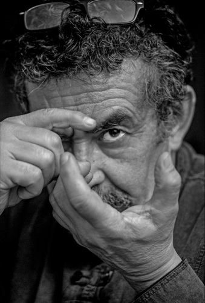
▸ 07Cunco, La Araucanía · más de seis décadas de oficio
Héctor González de Cunco es un fotógrafo chileno originario de Cunco, Región de La Araucanía, con más de seis décadas de trayectoria. Ha trabajado en prensa, fotografía editorial, retrato y publicidad, desarrollando paralelamente una extensa obra de autor centrada en la vida cotidiana, la memoria, el territorio y la identidad.
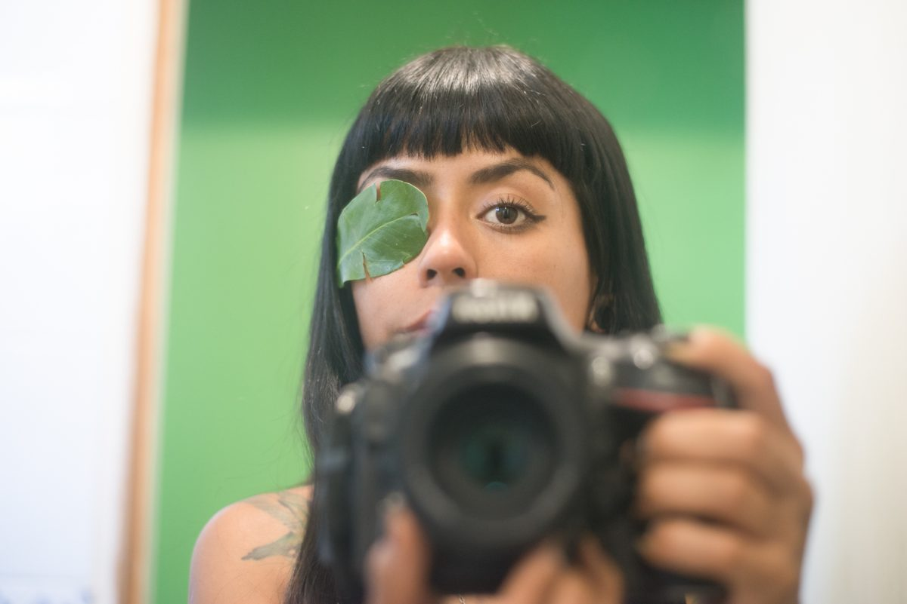
▸ 08Fotoperiodismo y documental
Fotoperiodista, realizadora audiovisual y defensora de derechos humanos. Ha documentado conflictos socioambientales y movimientos sociales en Chile y América Latina. Recibió el premio Rodrigo Rojas de Negri y en 2025 publicó el fotolibro «Terricidio».
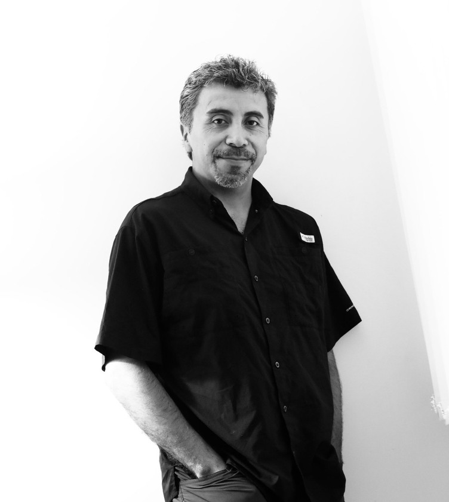
▸ 08AFotoperiodista · Premio Pulitzer 2019
Fotoperiodista chileno nacido en Puerto Montt. Como parte del equipo de Reuters, ganó el Premio Pulitzer de Fotografía de Noticias por la cobertura de la caravana migrante hacia Estados Unidos. Es el primer chileno en recibir este premio.
Estamos gestionando un espacio en el centro de Santiago: una universidad estatal o el Auditorio del Instituto Nacional. Publicaremos aquí la dirección exacta apenas se confirme.
Todas las opciones tienen acceso directo en metro por la Línea 1.
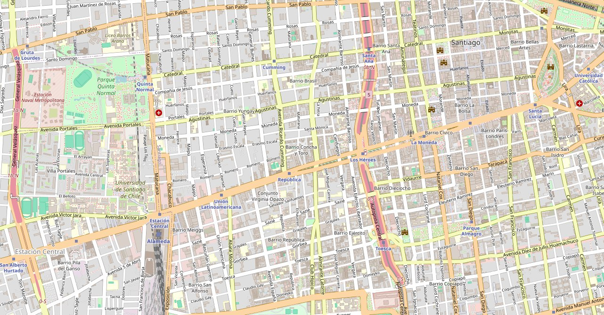
1 2 3Si no puedes venir a la sala, sigue el workshop en vivo desde donde estés. La transmisión es gratuita y abierta a todo público.
La grabación quedará disponible después en plataformas de libre acceso, para verla cuando quieras.
Plataforma y enlace por anunciar